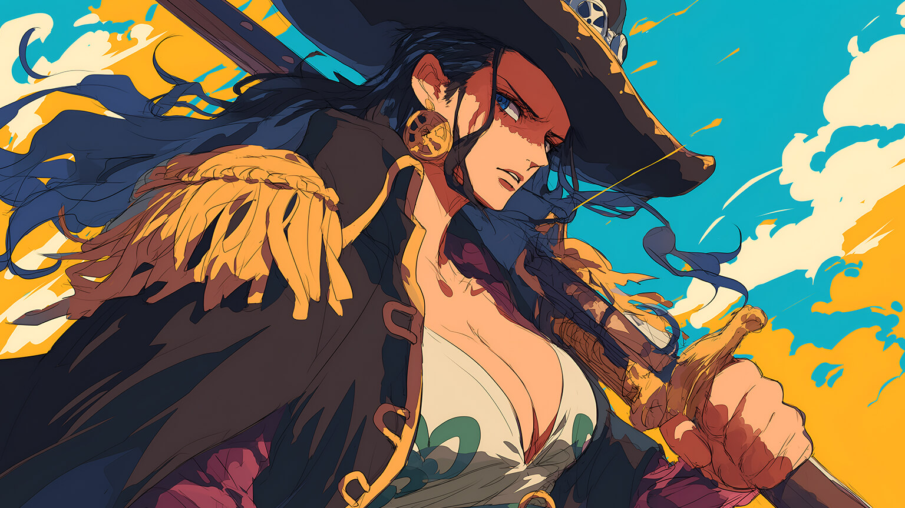
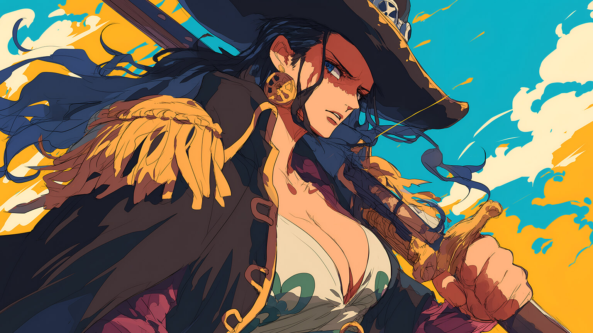

.jpg)
Monkey D.luffy
Monkey D. Luffy é o alegre e determinado capitão dos Chapéus de Palha. Com poderes de borracha após comer a Gomu Gomu no Mi, ele busca se tornar o Rei dos Piratas. Sua lealdade aos amigos e coragem o definem.
Roronoa zoro
Roronoa Zoro é o espadachim dos Chapéus de Palha, conhecido por usar três espadas. Sério e leal, ele sonha em ser o maior espadachim do mundo. Sua força e honra o tornam um guerreiro formidável.
Sanji
Sanji é o elegante cozinheiro dos Chapéus de Palha, especialista em lutas com os pés. Ele sonha em encontrar o All Blue e é profundamente leal aos seus amigos. Sanji nunca usa as mãos para lutar, apenas para cozinhar.
nami
Nami é a navegadora da tripulação e uma especialista em cartografia. Ela sonha em mapear o mundo enquanto usa um bastão climático para lutar. Sua lealdade aos amigos supera até seu amor por tesouros.
Tony chopper
Tony Tony Chopper é o médico da tripulação, uma rena com habilidades humanas graças à Hito Hito no Mi. Gentil e talentoso em medicina, ele pode se transformar em várias formas para proteger seus amigos.
Nico robin
Nico Robin é uma arqueóloga inteligente e séria, com uma busca profunda por conhecimento histórico. Ela tem a habilidade de criar réplicas de partes do corpo graças à Fruta do Diabo Hana Hana no Mi. Robin é leal à sua tripulação e protege seus amigos com determinação.
Usopp
Usopp é um atirador criativo e engenhoso, inicialmente medroso, mas que se torna corajoso ao longo de suas aventuras. Ele é conhecido por suas habilidades com estilingues e inventos astutos. Leal à tripulação, Usopp sempre usa sua inteligência para ajudar em combate